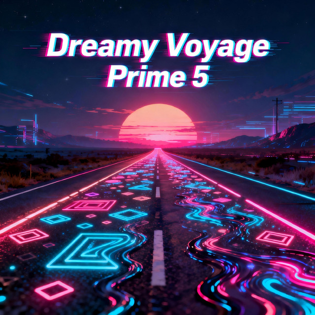

虚空造物
FFVoid
Forging acoustic realities from the infinite void. Atmospheric soundscapes, cyberpunk rhythms, and ethereal synth journeys.

Albums
Why Dreamy Voyage
Life carries an odd fragility, like a waking dream that slips through our fingers while we are busy keeping up with the world. In the rush of daily demands and ambient static, it is quiet and sudden how we lose touch with the people we intended to become.
That quiet drift is why Dreamy Voyage exists.
The raw melodies begin with AI, so I think of myself not as a maker, but as someone listening for echoes in the fog. Out of countless wandering frequencies, I keep only what speaks directly to the chest—because what truly matters is the door this music might leave unlocked for you.
Out of countless wandering frequencies, I keep only what speaks directly to the chest—because what truly matters is the door this music might leave unlocked for you.
I hope these tracks feel like stepping into zero gravity. The textures are hazy and slow, built to soften the edge of the day and let the room expand around you. When the background noise dims and the defenses quiet down, the things you set aside—early promises, half-remembered hopes, the clear light of your original purpose—can drift back into view.
Through all the winding complications of living, may this sound give you a pocket of stillness, and eventually, guide you back to your own shore.
— FFVoid (虚空造物) · Echoes in the Fog
Contact
For sonic collaborations, licensing inquiries, or echoes from across the void.
Click to copy
Write an email